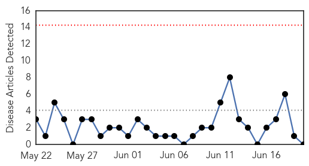
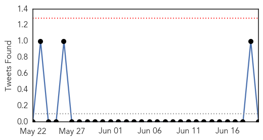
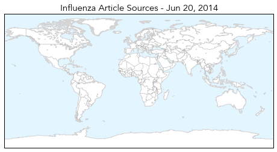
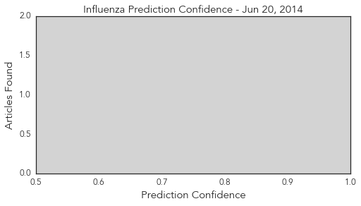

Influenza
30-Day Web Trend
0 alerts, 0 warnings

30-Day Twitter Trend
0 alerts, 0 warnings

Article Locations
Article Confidences
Top Articles:
-
No articles found for Jun 20, 2014
Top Tweets:
-
No tweets found for Jun 20, 2014
Cholera
30-Day Web Trend
1 alerts, 0 warnings

30-Day Twitter Trend
0 alerts, 0 warnings

Article Locations

Article Confidences

Top Articles:
- 0.951
- UN is sued for cholera killed thousands of Haitians, Dominicans
- 0.841
- U.N. chief served with Haiti cholera complaint, lawyers say
- 0.768
- U.N. chief served with Haiti cholera complaint, lawyers say
- 0.745
- Boston Indymedia
- 0.742
- Lawyers say UN chief served with Haiti lawsuit in NY
- 0.738
- Iraq: RRP6 Monthly Update - May 2014: Health - Iraq
- 0.686
- Humanitarian Crisis in South Sudan: An island of medical care amidst a sea of displaced persons - South Sudan
- 0.571
- 3 IDP children die of diseases daily in Bentiu UN camp – MSF
- 0.568
- researchers model ape disease transmission for the first time
Top Tweets:
-
No tweets found for Jun 20, 2014